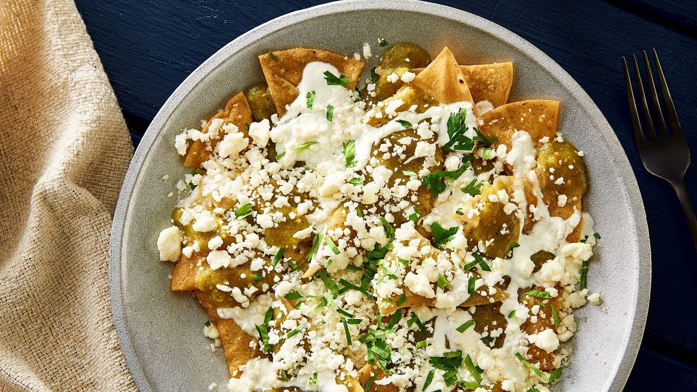

En el comedor PILI podemos encontrar distintas comidas tipicas y tradicionales ya que cuenta con un gran menu,
algunas de estas son:
Chilaquiles 
Menudo
Tacos Dorados
nuestro lugar se encuentra en Int. Mercado Fco. Prol. Gomez Palacio, Zona Centro, 34000 Durango Dgo.
Nuestra ubicacion